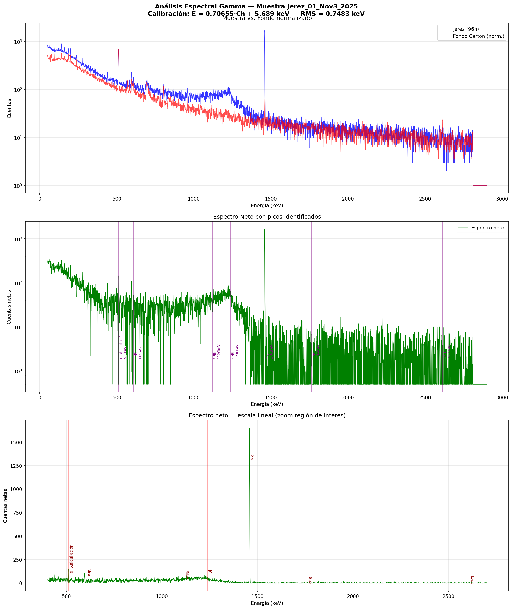
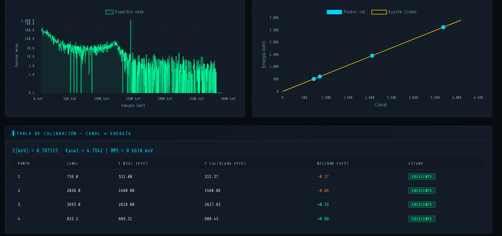
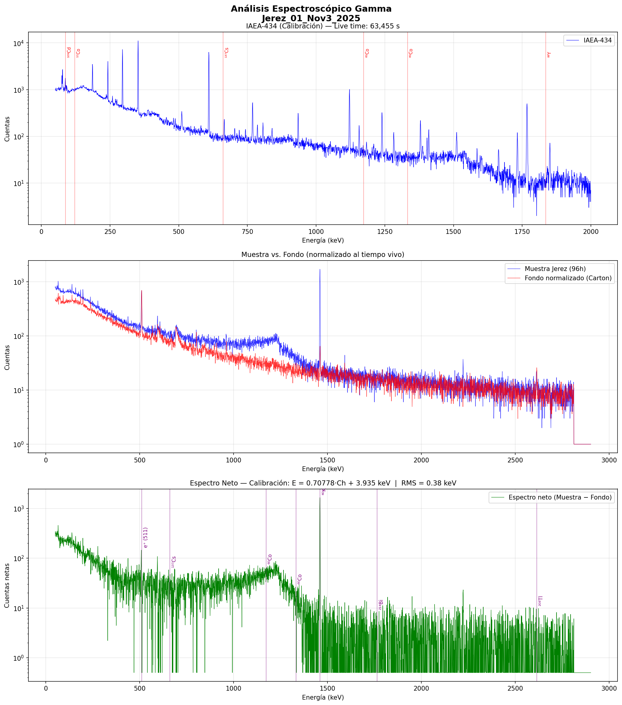
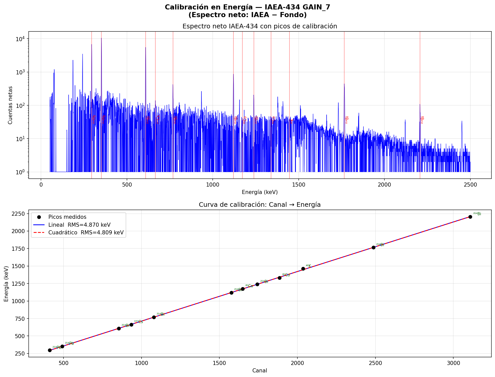

01
Lectura MCA
Importación de cuentas por canal, tiempo vivo, metadatos y puntos de calibración contenidos en los archivos.
Plataforma experimental para calibración energética, sustracción de fondo y análisis espectral de muestras agrícolas de Zacatecas. Primero desarrollada en Python; después convertida en una herramienta web interactiva.
SpectraLab organiza el flujo completo de análisis de muestras de maíz y frijol zacatecano medidas con un detector HPGe. La interfaz permite trabajar con tres archivos, observar cada etapa y conservar la trazabilidad de la calibración.
Importación de cuentas por canal, tiempo vivo, metadatos y puntos de calibración contenidos en los archivos.
Normalización por tiempo vivo y cálculo del espectro neto de la muestra frente al fondo.
Ajuste canal–energía, RMS, residuos y visualización de la curva con referencias conocidas.
Cargar muestra, fondo y estándar IAEA-434; definir masa, nombre y ventana de pico.
Relacionar el canal del detector con la energía en keV mediante puntos de referencia.
Normalizar el fondo al tiempo vivo de la muestra y obtener las cuentas netas.
Visualizar picos, FWHM, áreas, SNR y tablas para la revisión del investigador.
Galería de los análisis generados durante el trabajo experimental. Cada imagen conserva la relación entre espectro, energía, fondo, picos de referencia y calidad del ajuste.




La interfaz interactiva original se conserva como una aplicación independiente. Desde ahí se pueden cargar los tres archivos, ejecutar el análisis en el navegador y explorar las tablas generadas.
Aplicación original de análisis gamma con drag & drop, métricas, gráficas y resultados.